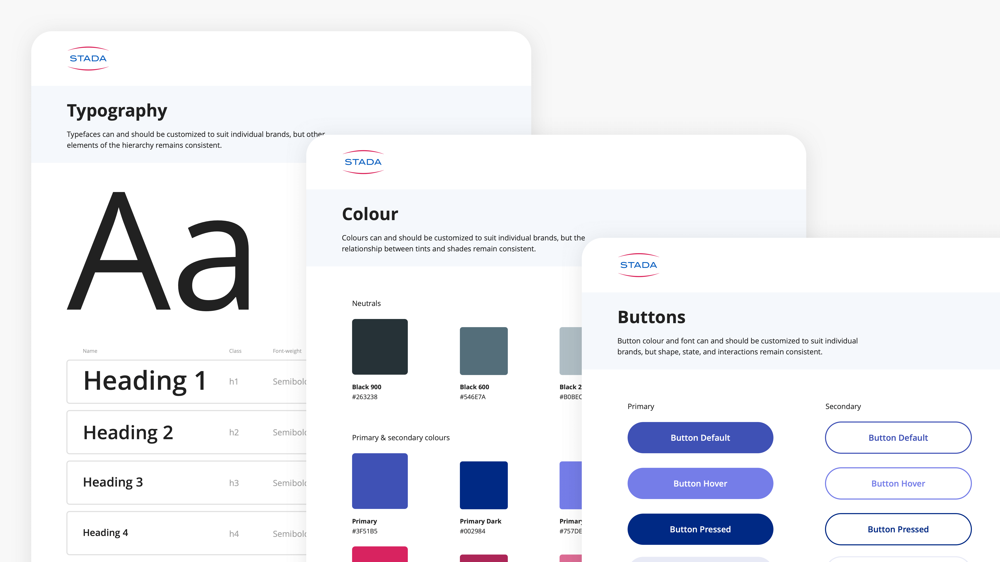
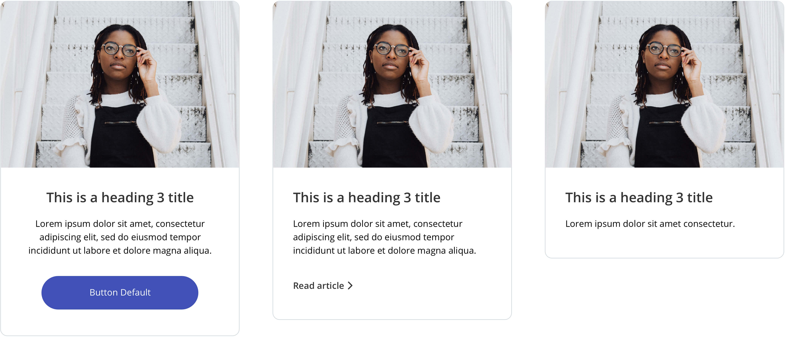

STADA is a pharmaceutical company with over 200 over-the-counter brands, each with its own branding and website. They came to our team looking for a website redesign for their family of brands. I was responsible for building a design pattern library with components that are easy to reuse, edit and combine together – it's a system that offers consistency across STADA's product sites, but also offers infinite design possibilities and adaptability to suit each brand.
My responsibility was to create a responsive design pattern library that would allow our small team to design and build over 100 brand websites quickly and effectively. In this case the end users of the product – a design system or pattern library – were our own design and development teams. My approach was to research existing design systems, understand patterns and involve the design and development team from the 'get-go' to participate with ideas and feedback.
The brand website for Hoggar Nights had already been designed and approved. I met with my stakeholders, in this case the project managers and designers, to identify which patterns would lend themselves well to being re-used across other brand sites. We also discussed common patterns that might be missing. These original patterns would form the basis for our pattern library.
I held a workshop with an interdisciplinary team of colleagues, where I presented an early version of the pattern library. We came up with the following principles and guidelines to help us design the library and choose when to use which pattern.
It took about about one month to build and iterate on it, and eventually to code the individual components. The specifications for the library live in a PDF document.
These are the smallest and most basic building blocks. Our foundations include typography, colour, spacing, and borders. Elements include buttons, links, headings, inputs, etc.
The components are created by combining basic elements – they can take on many forms like lists and cards.
The modules are created by combining basic elements and components. While we use a standard set of modules in our day to day work, new and distinct modules are always being created to suit special design needs.
Just a couple of examples of how the patterns have been used to design some of STADA's brand websites.
This common set of patterns has kept our products consistent with the STADA brand and their sub-brands. Our team learned a lot about communication and collaboration while working on our pattern library.
A living library. A design system needs constant development, maintenance and improvement. The biggest challenge has been to maintain one 'source of truth', and to keep the design library and coded components in sync. As we continuously use and expand it, we are making mistakes and learning as we go.
Designing for reusability. I learned the importance of coming up with a common language and documenting component specifications when working with a team of designers and developers. While it required a lot of work up front, having a set of patterns means we now have a smooth design, approval, build and launch process.